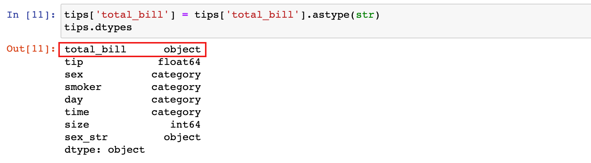
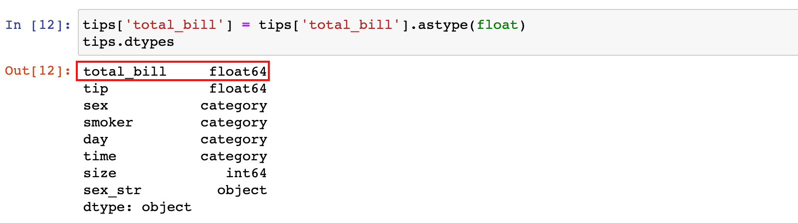
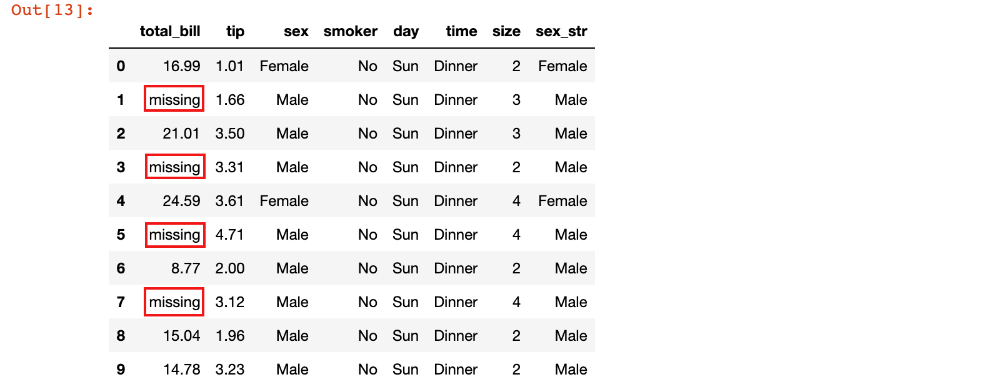
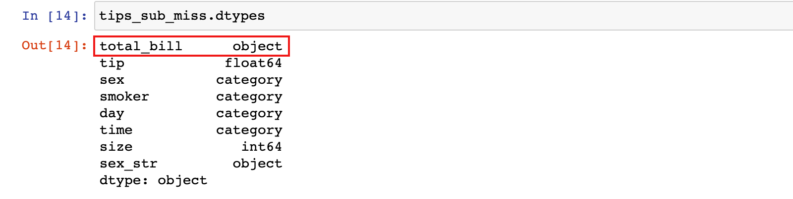
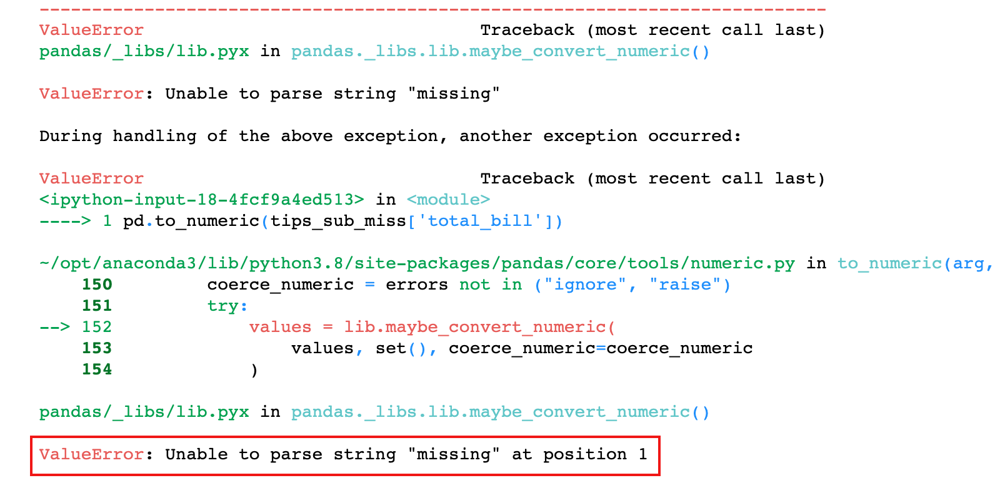
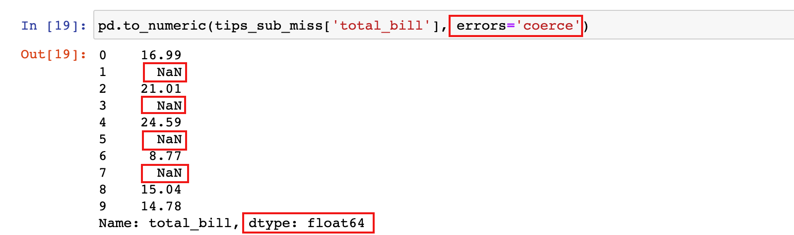
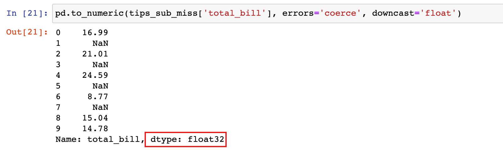

数据类型转换
学习目标
- 应用 astype 和 to_numeric 进行 pandas 数据类型转换
1. 类型转换
1.1 astype函数
astype 方法是通用函数，可用于把 DataFrame 中的任何列转换为其他 dtype，可以向 astype 方法提供任何内置类型或 numpy 类型来转换列的数据类型
1.2 转换为字符串对象
在上面的tips数据中，sex、smoker、day 和 time 变量都是category类型。通常，如果变量不是数值类型，应先将其转换成字符串类型以便后续处理
有些数据集中可能含有id列，id的值虽然是数字，但对id进行计算（求和，求平均等）没有任何意义，在某些情况下，可能需要把它们转换为字符串对象类型。
1）把一列的数据类型转换为字符串，可以使用 astype方法：
tips['sex_str'] = tips['sex'].astype(str)
print(tips.dtypes)

tips

1.3 转换为数值类型
1.3.1 使用 astype 函数
1）为了演示效果，先把total_bill列转为object/str类型
tips['total_bill'] = tips['total_bill'].astype(str)
tips.dtypes

2）再把`object/str类型的total_bill列转为float64/float类型
tips['total_bill'] = tips['total_bill'].astype(float)
tips.dtypes

1.2.2 to_numeric 函数
如果想把变量转换为数值类型（int、float），还可以使用 pandas 的 to_numeric 函数
astype 函数要求 DataFrame 每一列的数据类型必须相同，当有些数据中有缺失，但不是 NaN 时（如'missing'、'null'等），会使整列数据变成字符串类型而不是数值型，这个时候可以使用 to_numeric 处理
1）抽取部分数据，人为制造'missing'作为缺失值的 df 数据
tips_sub_miss = tips.head(10)
tips_sub_miss.loc[[1, 3, 5, 7], 'total_bill'] = 'missing'
tips_sub_miss

2）此时 total_bill 列变成了字符串对象类型
tips_sub_miss.dtypes

3）这时使用 astype 方法把 total_bill 列转换回float类型，会抛错，pandas 无法把'missing'转换成float
# 这句代码会出错
tips_sub_miss['total_bill'].astype(float)

4）如果使用 pandas 库中的 to_numeric 函数进行转换，默认也会得到类似的错误
# 这句代码也会出错
pd.to_numeric(tips_sub_miss['total_bill'])

to_numeric 函数有一个参数 errors，它决定了当该函数遇到无法转换的数值时该如何处理：
1）默认情况下，该值为 raise，如果 to_numeric 遇到无法转换的值时，会抛错
2）设置为
coerce：如果 to_numeric 遇到无法转换的值时，会返回NaN3）设置为
ignore：如果 to_numeric 遇到无法转换的值时，会放弃转换，什么都不做
pd.to_numeric(tips_sub_miss['total_bill'], errors='coerce')

pd.to_numeric(tips_sub_miss['total_bill'], errors='ignore')

to_numeric 函数还有一个
downcast参数，默认是None，接受的参数值为integer、signed、float和unsigned：1）如果设置了某一类型的数据，那么 pandas 会将原始数据转为该类型能存储的最小子型态
2）如 Pandas 中 float 的子型态有float32、float64，所以设置了downcast='float'，则会将数据转为能够以较少bytes去存储一个浮点数的float32
3）另外，downcast 参数和 errors 参数是分开的，如果 downcast 过程中出错，即使 errors 设置为 ignore 也会抛出异常
# downcast参数设置为float之后, total_bill的数据类型由float64变为float32
pd.to_numeric(tips_sub_miss['total_bill'], errors='coerce', downcast='float')

结果说明：从上面的结果看出，转换之后的数据类型为float32，意味着占用的内存更小了
总结
- pandas 数据类型转换
- 可以通过 astype 和 to_numeric 函数进行数据类型转换